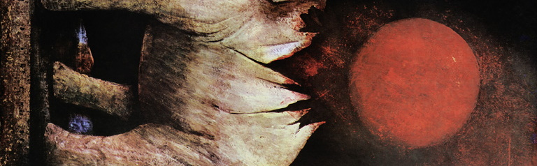

Lift

he's gone when i wake. i open my eyes to the dead sun overhead, arms wrapped around a boy that's not there anymore, shirt wet, eyes hurting, body hurting. everything hurting. skin on my hand peeling. back flat against the concrete. i get up, assess the damage. my arms feel like lead. my wrists roughed up by his hands, marked up, raw. cheek still burning from being branded by the sparkler. my shirt, shorts are stained. trash everywhere around the gray rooftop, no clouds above me, just me and the sun as i stretch worn-out arms and shoulders and pack the burnt-out sparklers and cardboard boxes, plastic bowls, bottles into the plastic bag they came in and take the elevator 90 storeys downstairs. it takes 2 minutes that feel like 10 minutes and the hum is back, buzzing, thin paper walls vibrating accusatory questions at me, "what did you do last night, what did you let him do, there's no coming back from this now, is there?", questions i have no answers to. the hum is loud. the elevator is a dingy green, paint peeling from the walls in neat squares, pale yellow LED light overhead, rusted bars on the sides to hold on to. in elevators when you stare out the window sometimes you can see in-between the spaces on the storeys, these dark places of nothing amidst the something, where you can see the rebar in the flooring and cables, wires, pipes. when there's two elevators side by side you can look into the empty elevator shafts, the metal framing for the maintenance workers, counterweights, warning signs, gears. but in this building all of it is the nothing. everything is loud. as i stare out at the nothing with the bag of trash hanging from my wrist a foul liquid from the plastic bag leaks onto my foot, cold and hot at the same time, viscous, sludgy. i stomp at it, try to wipe it away, just spreads it everywhere on my foot instead. the hum starts screaming at me now and the smell hits me and the nothing outside the elevator walls looking back into my eyes and my wrists hurting i vomit long, hard in the corner of the elevator, brown poison seeping everywhere in this tiny space, like a puddle of a thousand blended cockroaches, chunks in an unknowable liquid, slopping around. i watch it spread through the floor.
the elevator door opens after another minute that feels like 15. i step out, vomit still pooling thick on the floor, out of the building, see our car that we parked by the curb. he's inside, asleep with the windows rolled down, chest curled tight into his knees, trying to make himself as small as possible. i look down at him and i don't know how to feel. regretful, angry, disgusted. all three. some hidden fourth option i can't say to myself yet. i toss the garbage in a nearby bin, and as i walk back towards the car i see the fire he's spray painted on the door in thick black paint and something breaks inside of me and i just sit down on the curb stained shoes flat on the asphalt and sob, head in knees, wracking, painful, two minutes of sputtering, choking like a child, and then i snap out of it as quick as it starts, use the tears to wipe my foot clean, catch the burnt rod-shaped scar on my cheek in the rearview mirror, i get into the car and i shut the fuck up and drive, singed scar tissue on my palm around the wheel.
the drive is short. he stays asleep for all ten minutes that feel like two minutes of it, and when we get back to our apartment i reach over into the backseat and shake him, wake up alex we're back home, but his eyes won't open. he is warm to the touch and i see his chest fall, rise, he just won't stir awake. i look at him again, jacket stained, hair messy, eyes crusted over, arms wrapped around his legs, breathing steady, in out in out, locks of hair settling soft over his face like grass, cheeks still a little red from the night before, i open the backseat door and scoop him up in tense, aching arms, wrists stinging again from his touch, i carry him out of the car and into the building. i feel his still-drunk breath on my neck, all his weight collapsing into me, he's heavy, firm in my hands, jacket rubbing against my arms. he always was stronger. i hold him by his back, knees, and his head turns towards my chest. as i walk into the elevator and nudge the buttons with my elbow there is no electric buzz, no hum from the walls, no questions, no errant noise, just the sound of him breathing slow and quiet into my neck, in out, in out, in out. i look down at his eyes shut firm, look at his body. he is fragile, delicate, lamblike in my hands. i think about crushing him to death. i think about throwing him off the roof. i think about another third thing i can't say to myself yet. when the elevator door opens and i walk into our room with him still in my arms his jacket hikes up and i feel the soft skin on his back against my forearm, i feel it for about half a second until i force myself to shut down the sensation. i get into our room and set him down on his mattress, lift his head and put it on my pillow. i head to the kitchen, pour him a glass of cold water, wrap a paper towel around it, put it down by the mattress. i stand over the foot of his bed, staring, body now splayed gentle, relaxed over the covers, red streak in his hair shining in the LED light, jacket shifted up above his shorts baring a little bit of his stomach, i crouch down and lift up the hem slightly, revealing more of his body, stare at him, his defenseless body, trail of hair starting from his navel going downwards, smooth chest, toned lines converging downwards, paths i stop my eyes from following. i stay crouched, looking, looking, just looking, letting the light collect on his bare body, rays of sunlight working through his skin and torso like fingers. staring for two minutes that feel like fifteen. when i'm done i shift the jacket back down, walk into the bathroom and spill everything inside me over the toilet bowl. then i go to bed with my legs crossed.
hey.
yeah?
did you.. carry me all the way here?
well i drove you first. but i carried you, yeah.
oh... okay. thanks.
you would've done the same.
listen. about.. about everything.
it's okay. we don't have to talk about it, really.
yeah?
yeah. we don't have to.
okay.
we sit side by side on his floor mattress, hands extended thin over my knees, wrist and cheek still smarting from yesterday. the evening is cold, moonless. ceiling fan overhead whirring. there's a quiver in his voice that betrays him. i stare blankly at gaps between tiles on the floor. i liked it better when he was asleep still.
maybe we should talk about it.
what's there to talk about?
i dunno. we don't ever talk about anything, i guess. and. i feel weird.
yeah?
i just.. uhh. well. first of all i'm sorry.
it's okay.
is your cheek okay? your hand?
it's alright, yeah.
i don't think i'll drink again. for a long time.
i'm sure.
i hope. that i didn't make shit weird. or anything. i just had a little moment and i couldn't control myself and i was being strange to you. and i took it way too far. and-
do you wanna go back to the carparks?
huh?
that place we saw the fountain. you want to go back there? there's still some shit we could do there. some of the carparks are still standing.
i... sure? why are you asking me this now?
i don't know. old times sake. you're right. it's weird. we're being weird. let's go do some shit, yeah?
are you angry at me?
yeah.
why? if it was something i said-
it doesn't matter. let's go. right now. you're not going anywhere later right?
can you answer?
let's go and then we can talk about it or whatever. this room is so small. we can go do some shit. let's do some shit together.
okay.
he picks up the glass of water that's long gone warm, drinks all of it. starts packing his bag with the stuff we'll need, tupperwares of powder, cans of fluid, flashlight, matches. i take my shirt off and change in front of him and pretend not to catch him looking, backs turned towards each other. he changes into another jacket in the bathroom. plain white tee on, grab water from the fridge, lace up. time to go.
we're there by 9 and we light the fires by 930. we settle into the groove quick despite not having done it for weeks together, second nature, it comes natural, easy. flows. it's standard protocol, nothing new. we toss a match from afar into a puddle on the floor, sprint down the staircase, and watch it grow and grow and grow. it feels good again, to do this, feels right. we turn off the flashlights when the firelight is bright enough to walk around without tripping on the ground, and we sit on the floor by the fountain, stagnant water pooling flat inside a stone circle, blanketed by moss, algae. everything glows a slight orange, including him.
the fire behind is warm, huge, glowing. it is brighter than any we have done before, angrier. he sits there next to me silent, brooding, pathetic, a fourth thing. i feel my hands trembling, cheek and wrist still hurting like a bitch. i press my palms flat on the gravel, scar tissue screaming pain at me that i don't listen to, and stand back up, staring idle at the fountain, and then i look down at the orange-tinted earth and find a big enough chunk of exploded rock, dip down to pick it up, stand up on two tired feet and hurl it straight at the fountain. i miss. he doesn't ask what i'm doing, locked in this silent agreement only we could share, he stands up and finds another rock, smaller this time, curls a hand around the edges and lobs it overhand, he misses but hits the water. splash.
again. rock in hand, step back, tense the muscles backwards, uncoil it and release. i hit the water too. i watch as he does it this time, orange firelight gathering heavy on his body against pitch black new-moon night, framed like chiaroscuro, as he tilts backwards, poised lithe like an archer, stringing forward, go - it almost hits the bird, lands with a thunk in water, moss striking upwards when it connects. i go for it again, one eye closed to focus, gripping the rock so tight i could squeeze water out, staring pale and hard at the bird 20 metres away, fire behind crackling like a thousand castanets, i arch backwards, lunge for it, throw, feel it fly out my hands like a sparrow, it's another splash. fuck.
he crouches down and feels for another, i see that steel in his eyes again, calm, raw, body stiffened but limber like a marble statue, muscles bigger than mine, arms more powerful, eyes sharper, legs more fluid, he throws it arcing beautiful dead through the orange-black sky, cometlike, a star burning out before it hits the bird square in the head, topples the statue over into the fountain. i watch as this distant black dot falls backwards into the water, and something evil, bubbling, tensed inside me starts to erupt, spill out of my ears, eyes. i feel hot. it's not fair.
ahh. fuck. fuck's sake. god damn it.
yeah?
ahh. my fucking god.
it's not fair. it's not fair. it's not fair. it's not fair.
are you alright?
yeah just. god.
did i do something?
how the hell do i even explain this to you? what are we doing here?
i.. you wanted us to come here. i thought you'd feel better.
i do, i was, i, god, fucking-
i pick up another and hurl it as hard as i can, fast as i can, exploding, every cord of muscle in my stupid fucking body tearing apart, what the hell is wrong with me, what the hell is wrong? i-
ah god what the hell. what the hell. i'm going to, fucking, i'm going to do something, going to find something, fuck, what the hell, i have to go, i have to go, i have to go. what the fuck, fuck, fuck, fuck fuck fuck fuck fuck
dam breaks.
hey, hey, shit-
don't fucking touch me.
get me out of here. i need to go. i need to go.
i need to run.
my head's still here.
i can't leave.
fire's warm.
okay?
we're okay, we're okay, we're okay.
bad night.
he's still here.
just him.
when you did that shit to me yesterday it scared me. it scared me and i didn't know you were capable of it. i felt like you were violating me, like you crossed a line i never could have, but i, fucking, it didn't hurt me in the way you thought it would, didn't hurt me because you were weird and crying about some shit i didn't know about and you ruined the night you didn't ruin the night it was fine, i was fine, but you put yourself on me like that and it hurt, you burned me with your own hands and it felt terrible and disgusting and i thought i didn't want to be touched like that by anyone and i was scared. i can't do to you what you do to me. i'm not brave enough. it hurt to be held and it scared me but i wished maybe in better circumstances in a gentler way you could've done it to me and we could've liked it together instead of the way it went, but you did it anyway and it hurt because you did what i couldn't do first despite everything, and i don't even know if you wanted to do it the way i did, or if it mattered at all to you, if i was just another warm body for you to cry into or if you only felt like doing that because it was me and you only feel this way around me, or, if it was bad for you, and you wish it never happened, and you don't ever want to see me again, but i just wish i had the upper hand, i've always been on the back foot, and now we live together and you're so close and i was doing so well having you around and us just being friends together in the same space and then that shit happened, and i think about you a lot, i look at you a lot, and i don't know what to do about it but it feels like you don't even care that i'm here or you're just, not affected by my presence the way you affect me, and it feels cruel and it all came to a head there, and it's not your fault, but i just, i just need you to see me. god. god. god. okay. it's-
it's okay.
i'm sorry.
it's okay. i'm here.
i look up at him knees clutched to my chest with blurry, wet eyes, he looks back down at me not with pity or disdain but with concern, worry, are you okay? we lock eyes for two seconds that feel like fifteen, until he crouches back down, rests his palms on the ground, breathes slow, still,
it's okay. i understand.
yeah?
yeah.
i look down at my trembling hands, then i look back at him, a face i've known for the past year, him like an etched headplate in my skull, a face i've seen in dreams, nightmares, everything between. i can't do this. one side of his face is painted black by the night, the other a warm yellow, lighting flickering on and off as the fire by our side burns. i don't know what to do.
can you.. i don't know. can you hug me?
he does, and the world goes quiet. faint radiating heat from the crackling fire, the scrunching of gravel underneath. i close my eyes as he takes me in his arms slow, and i bury my head in his neck, and the world goes quiet, it does, for 2 minutes that feel like 60. i breathe deep, wanting to be consumed, wanting to be small in his arms. i feel regretful, angry, disgusted, yearning. i feel his jacket on my burnt cheek and his hands down the small of my back and he stays still as i lie dead on his body. it feels like i've just thrown up, like i've done something bad, like i want to lock myself away, but he's here and there's no running, no escape, no heaven, no hell. body to body. keep me close or i'll die. keep me here tight or i'll crumble in front of you.
i didn't know you felt like this. i'm sorry. i remember the night fully. i lost myself and i hurt you. it wasn't me that night but i'd - i'd be lying if i said i didn't want to get closer to you like that sometimes.
you wanted?
my voice comes out muffled against his jacket. he speaks slowly, deliberate, like he's afraid of shattering me.
i did. i just. didn't know how to do it right. i fucked it up. but we can do it again, sometime, and it will be good when we decide to, right?
i...
it will be. you mean a lot to me. you're my best friend.
everything catches tight in my throat, face still pressed into his neck and shoulder, eyes closed because it would hurt too much to look. arms by my sides, frozen. i find the words, somewhere.
you're my best friend too.
best friend. i, i don't know. i don't know. i breathe hard one last time, then break away from his arms, fall backwards. stare at the floor, glinting orange and black, like the colors are fighting. best friend. my hands hurt. my wrists hurt. what's done is done now. he looks at me again, those eyes like knives, and i feel my heart burning as i look back. we stare at each other, eyes on eyes, for five minutes that feel like five minutes, and as the fire starts to die out, as the pale moon moves in the night sky, i see something in his eyes, something i can't mine out yet, and we stay like this for a while, locked together in orbit.